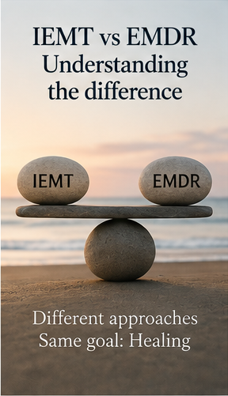
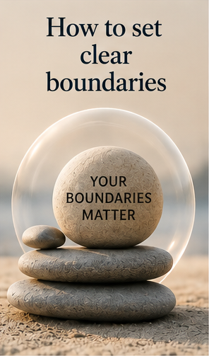
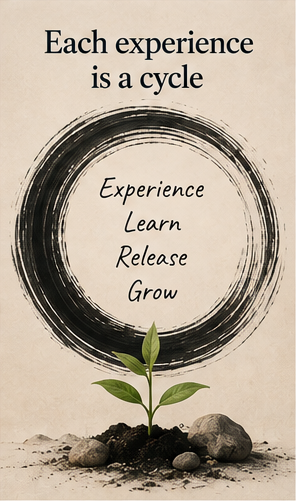

Insights & articles
Understanding, in plain language — not just reassurance.
Short, practical reads on overcoming anxiety, breaking people-pleasing patterns, setting boundaries without guilt, and how hypnotherapy, breathwork and IEMT actually work underneath the surface.
Browse by topic
Recent reads

IEMT vs EMDR: What’s the Difference, and Which Is Right for You?
Both use eye movements to work with emotional memory — but the similarities end there. A clear, honest comparison of the two approaches, including why some clients prefer IEMT’s gentler method.
Read article
How to Set Clear Boundaries Without Drowning in Guilt or Shame
Why boundary-setting so often feels unsafe before it feels empowering — and how releasing the old imprint behind the guilt makes “no” feel like self-respect instead of conflict.
Read articleHow to Deal with Guilt
When your mind loops on “I should have…” and “Why did I…?”, it helps to know where the guilt is coming from — and how to loosen its hold.
Read articleHow to Deal with Shame
Guilt says “I did something wrong.” Shame says “something is wrong with me.” A gentle look at where shame comes from and how it can soften.
Read articleOvercoming Anxiety in Relationships: Why It’s Rarely About Your Partner
Relationships don’t create our triggers — they reveal them. A look at how relational anxiety often traces back to earlier, unresolved patterns of self-abandonment.
Read articleAnxiety and Weight: Understanding the Nervous-System Connection
A compassionate, non-prescriptive look at how chronic stress and dysregulation can show up in appetite and body patterns — and why addressing the nervous system often matters more than willpower.
Read articleCoaching: From Clarity to Freedom
Clarity, purpose, action, freedom — how coaching complements the deeper subconscious work, and when it’s the right next step.
Read article
Each Experience Is a Cycle
Experience, learn, release, grow. Why we sometimes get stuck midway through the cycle — and how to keep it moving.
Read articleWhile you wait
Feel calm. Feel grounded. Feel renewed.
Start with a free Nervous System Reset audio for women who feel emotionally exhausted and overwhelmed. Connect with your breath, soften the tension, and let your mind settle.
Nervous System Reset
Download your free audio
Let’s talk
Prefer to talk it through directly?
A free 20-minute call — no pressure, no obligation. Just a conversation to see if this approach aligns with your goals.
Book your free consult